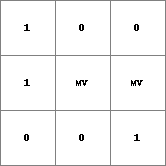
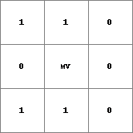
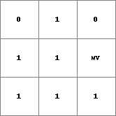

xor, ^, pcrxor
Boolean-xor operation
Result = expression1 xor expression2 # pcrcalc
Result = expression1 ^ expression2 # python
Result = pcrxor(expression1, expression2) # python
The cell values on expression1 and expression2 are interpreted as Boolean values; where 1 is TRUE and 0 is FALSE. For each cell the Boolean xor evaluation is performed: if both expression1 and expression2 have a cell value 1 (TRUE) or both have a cell value 0 (FALSE) Result has a cell value 0 (FALSE) on the corresponding cell; if one of the expressions (expression1 or expression2) has a cell value 1 (TRUE) and the other a cell value 0 (FALSE) Result has cell value 1 (TRUE).
| xor | expression1 | Result |
| expression2 True | True | False |
| expression2 True | False | True |
| expression2 False | True | True |
| expression2 False | False | False |
A cell with missing value on expression1 or expression2 or on both expressions results in a missing value on Result at the corresponding cell.
This operation belongs to the group of Boolean operators
| Result.map | Expr1.map | Expr2.map |
|  |  |  |